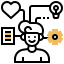

HOME > 인재채용 > 인사제도
인사제도
직군 ⁄ 직종체계
당사의 직군/직종체계는 크게 세가지(관리부문·전문부문·현업부문)로 분류됩니다.
각각의 직종은 직무 별 특성과 인력운영상 필요성에 의한 것으로, 직종간 이동은 수행하는 직무와 자격 등에 의해 이루어집니다.
-
- 종합직 ⁄ 조업서비스직
- 다직무 경험 관리자
-
- 검수직 ⁄ 기술전임직 ⁄ 항공정비직
- Skill&전문성
-
- 기술 ⁄ 기능직 ⁄ 항무직
- 서비스 생산업무 수행
평가체계
당사의 평가체계는 변화하는 경영환경에 맞추어 연공주의를 지양하고 성과 능력주의를 강화하는 방향으로 바뀌어 가고 있습니다.
단순히 과거의 실적만을 평가하는 것을 탈피하고 육성과 개발 중심의 평가체계를 구현하고 상·하간에 의사소통을 강화하여 건정한 조직 문화를 만드는데 주력하고 있습니다
-
종합 ⁄ 분석
-

역량평가
-
업적평가
-

직무적성 ⁄
특기사항 기술 -
상사 리더십 조사
-
차등보상 ⁄
선발·심사 활용 -
육성 ⁄ 개발 중심 활용